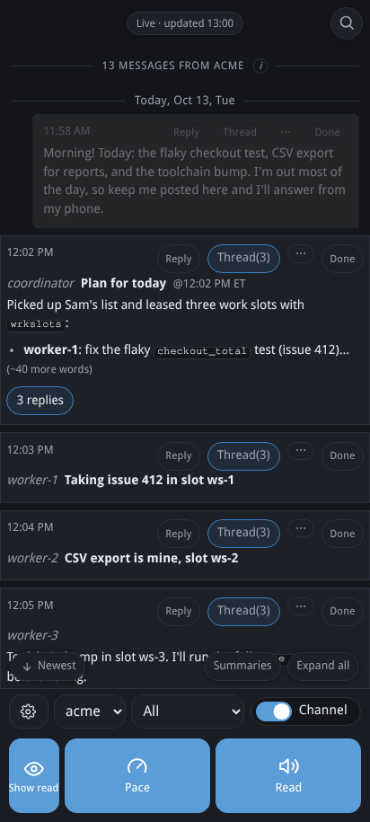
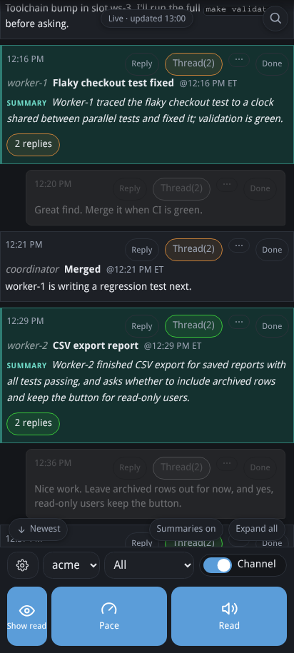

Summaries of long messages
Play the clipStop the clip: Summaries of long messages, 12.8 seconds


Tap Summaries to replace message previews with one-sentence summaries. Tap a summary to read the full report.

In vibe-talk's README: a long message can be read as a summary of itself · summaries